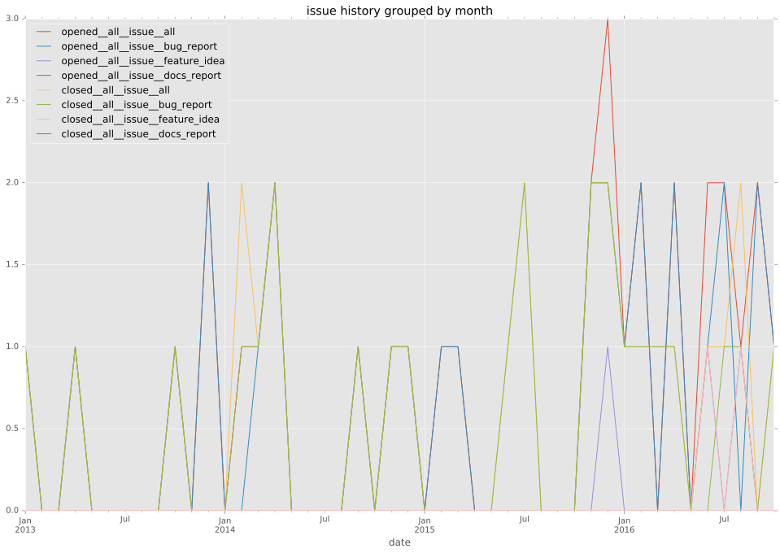
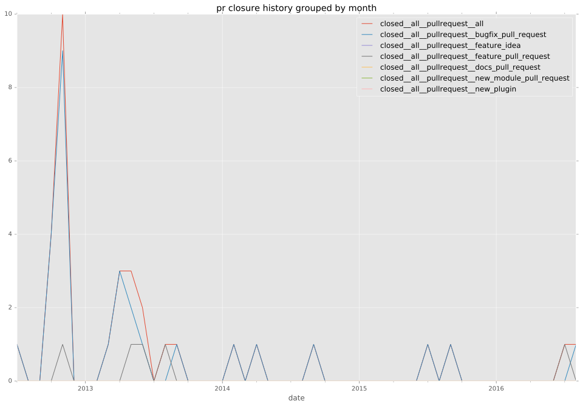

authors
- dagwieers
maintainers
- dagwieers
contributors
- dagwieers : 6 commits
- mpdehaan : 5 commits
- jpmens : 4 commits
- bcoca : 4 commits
total issue counts
bugfix pull request: 37
pullrequest: 45
feature pull request: 8
feature idea: 3
issue: 31
bug report: 28
issue history

pullrequest history


days open by issue type
feature pull request
count: 15
std: 125.214596745
min: 0
max: 365
median: 9.0
mean: 58.5333333333
all
count: 96
std: 79.1117353284
min: 0
max: 543
median: 1.0
mean: 23.3333333333
pullrequest
count: 0
std: nan
min: nan
max: nan
median: nan
mean: nan
bugfix pull request
count: 55
std: 24.8047323605
min: 0
max: 131
median: 0.0
mean: 7.14545454545
feature idea
count: 2
std: 3.53553390593
min: 0
max: 5
median: 2.5
mean: 2.5
issue
count: 0
std: nan
min: nan
max: nan
median: nan
mean: nan
bug report
count: 24
std: 114.430030517
min: 0
max: 543
median: 0.5
mean: 40.1666666667
closures grouped by total days open